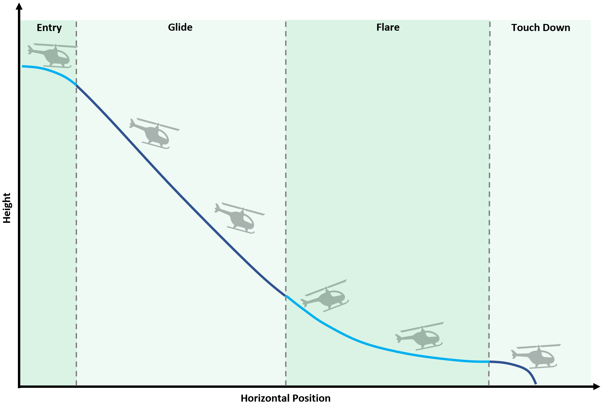
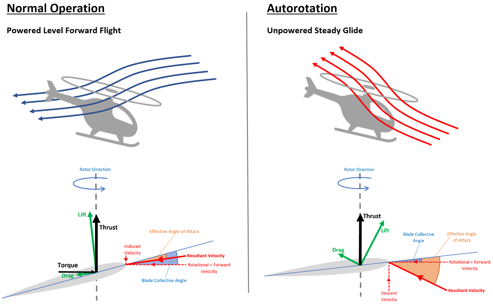
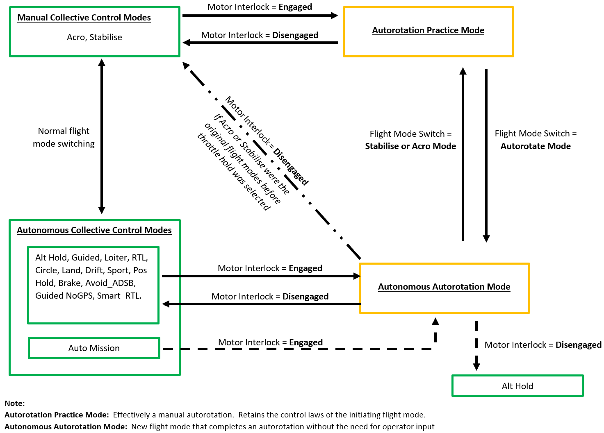

Autonomous Autorotation¶
This page introduces the helicopter autorotation flight mode. To assist in understanding how the mode works a basic overview of the theory is first given. This will be followed by instructions on how to setup and tune the flight mode. However, as this mode is still in development, a link to the forum thread is provided. This thread contains all the latest information on the mode, as it is created.
Note
This flight mode is available for traditional helicopters only. It is currently limited to single rotor helicopters.
Warning
This is an ongoing development project. This is only enabled for use with SITL. Do not attempt to use this flight mode in real life.
Overview of the Autorotation Manoeuvre¶
Traditional helicopters are capable of landing safely after losing propulsive power. This is achieved through the autorotation manoeuvre, in which the descending aircraft can use the airflow being forced up through the main blades to drive the rotor and still produce some upwards thrust. The primary goal of the manoeuvre is to use the aircrafts remaining energy to bring the aircraft safely to the ground, landing softly.
The manoeuvre can be broken down into phases. The breakdown and description of those phases differs across the literature that is available on the topic. The description that is given here matches the approach taken in the implementation with ArduCopter.
There are four phases of the autorotation:
1. Entry - The initial actions of the vehicle in which collective is used to minimize head speed loss and cyclic is used for attitude control to either maintain or begin building forward airspeed.
2. Glide - The continuation of the entry phase in which collective is used to manage head speed and cyclic is used to manage airspeed. In this phase the aircraft can be gently navigated to attain the most suitable landing area, within its gliding range.
3. Flare - Performed close to the ground this phase of the manoeuvre looks to convert airspeed into lift, reducing descent speed and, where necessary, building head speed. This is achieved through a complex coupling of both collective and cyclic.
4. Touch-Down - The vehicle is gently landed using the energy remaining in the rotor head. Head speed is converted into thrust through collective management and cyclic is used to maintain a landing attitude.
The diagram below illustrates the four phases. Each phase will now be explained in more detail.

Entry Phase¶
Without sufficient power to maintain flight a helicopter will descend. The descending aircraft can utilise the relative upward flowing air to drive the main rotor. This is the essence of the autorotation. This is illustrated in the image below, in which the left-hand images show a simplified view of how the rotor forces are generated in normal powered flight. This can then be compared with the images on the right which show the forces generated whilst gliding in an autorotation.

A key difference to note between the two scenarios is the reversal of the vertical velocity component. It is this reversal of the vertical velocity that necessitates careful collective management when entering the autorotation. The objective is to reduce the blade collective angle reducing the risk of blade stall. It is key that the collective is moved proportionally to the direction of the resultant velocity vector to minimize the blade drag generated, preventing excessive loss of head speed. As the descent velocity increases the lift vector will naturally rotate towards the leading edge of the blade, providing the driving force to mainain rotor RPM.
In addition to this, the forward airspeed must be either maintained or increased (if the failure is initiated from a low airspeed state). This is done through cyclic controls.
Glide Phase¶
This phase of the manoeuvre is analogous to gliding flight for fixed-wing aircraft. Forward airspeed is necessary for efficient flight and will improve the range of the helicopter, increasing the likelihood of finding a suitable landing area. It is important to maintain aircraft energy as efficiently as possible in the glide phase so that the maximum amount of energy is available for the flare and touch-down phase.
It is during this phase of flight that small angles of bank and low yaw rates can be applied to navigate the aircraft towards a suitable landing area, and where possible, turn to land into wind.
Flare Phase¶
This is the most critical phase for achieving a good landing during autorotation. The objectives here are to:
Reduce vertical descent speed.
Convert forward airspeed into main rotor lift.
Perform the manoeuvre close to the ground so as to minimize the height loss required during the touch-down phase.
Cyclic is used to pitch the aircraft nose up. Doing so changes the effective angle of attack seen by the main rotor blades. This has the effects of both increasing the lift force and rotating the lift vector towards the leading edge of the blade. Hence, a greater component of the blade lift is available for driving the main rotor, providing more energy for use in the touch-down phase. In addition, the larger lift and drag forces generated in the flare contribute to the deceleration of the aircraft ready for landing. Collective is subsequently used to manage the head speed, preventing overspeed and blade stall as required. It is during this phase of flight, toward the transition to touch-down, that the flow direction is once again reversed and the rotor begins generating a downward induced flow once more.
As this manoeuvre is flown close to the ground it requires a reliable height estimate that can account for the local terrain. Downward facing LiDaR is therefore highly recommended.
Touch-Down Phase¶
Finally, with the aircraft now close to the ground, with low forward and descent speeds, it can be gently lowered to the ground. This is achieved using the energy remaining in the main rotor to produce/maintain an induced flow. As energy in the main rotor is used it will slow, meaning more and more positive collective is applied to maintain the thrust force being generated. The aircraft must therefore be landed before the head speed slows too much, resulting in blade stall. This phase of the autorotation is highly dependent on the amount of energy that can be stored in the main rotor head. Main rotors with higher inertia are therefore comparatively easier to autorotate due to their greater capacity to store energy. This is one reason why larger RC helicopters are deemed easier to autorotate than their smaller counterparts.
Bail-Out Phase¶
Not a part of the “standard” autorotation, the bail-out phase has been created for the purposes of recovering the aircraft when tuning the flight mode or for when power is restored after a temporary power failure clears (e.g. a kinked fuel line becomes straight again). When exiting the autonomous autorotation flight mode the aircraft will be returned to a “non-manual collective mode”. It is therefore necessary to gently reintroduce the z position controller to prevent aggressive collective angles being applied, resulting in blade stall or even rotor stop.
When initiated, the bail-out phase will read the requested climb or descent rate from the operators throttle stick position. The aircraft will then be decelerated over a set period of time (see parameter AROT_BAIL_TIME). At the end of which, the requested vertical speed will match the magnitude requested on the stick. The time spent in this phase is typically of the order of two seconds. Smaller helicopters (550 size and below) may require this time to be extended to three or four seconds. When deciding/tuning, it is conservative to opt for a longer time and initiate a practice bail-out with a large height margin for recovery.
Note
The motor ramp time defined by H_RSC_RAMP_TIME is ignored during bail-out, and a hard-coded ramp time of one second is used.
Warning
The ramp time defined by H_RSC_RAMP_TIME is now only observed when the aircraft is on ground and the “landed flag” is set true. It often takes ArduCopter a second to register that the aircraft has landed once on the ground. Therefore, if the interlock is re-engaged immediately after the aircraft touches down the one second ramp time of the bail-out phase can be initiated on the ground. Caution is therefore required when running autorotations in quick succession to prevent rapid rotor spool up on ground.
Mode Setup¶
This flight mode is currently under development. It is available in Copter 4.0 as SITL only, for those that want to test the entry, glide, and bail-out phases. For the most up-to-date information please see this Discourse Topic . Once the mode has been sufficiently tested the final instructions will be published and maintained on this wiki page.
Mode Entry¶
The autonomous autorotation flight mode cannot be entered via a mode switch, as is done with other flight modes. In an attempt to mimic the autorotation procedure followed when flying a manual autorotation, the mode is entered and exited using the motor interlock switch. The autonomous flight mode can only be entered if the interlock is disengaged whilst flying in a non-manual collective mode. When exiting the autorotation the flight mode is returned to the mode from which it came (e.g. Altitude Hold -> Autonomous Autorotation -> Altitude Hold). The only exception to this is when the aircraft enters the autorotation from an auto mission. In which case, the mode is exited into Altitude Hold. This is done to prevent the aircraft from potentially resuming its auto mission and flying further away from home, whereby in the scenario it has autonomously recovered from a power failure and is therefore high risk for another power failure.
The diagram below illustrates the mode switchology:

Setup Support¶
For any setup advice please post in this forum thread.